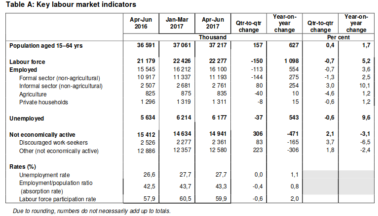

This is a preliminary post. The quoted and calculated figures may not necessarily be correct to the accuracy they are given. The plan is to update this page with each new labour force survey report.
Since 2008, StatsSA has been publishing the Quarterly Labour Force Survey (QLFS). It is a household-based sample survey that collects data on the labour market. The table below is taken from the second quarter of 2017 report.

South Africa has a crisis of unemployment. I'm not an economist, so am not going to discuss what is needed to solve the crisis. What I would like to focus on is not how jobs should be created, but rather how many jobs need to be created.
There are two (complimentary) ways to consider how many. The first is to consider how many jobs need to be created so that unemployment drops to some acceptable level. The second, the measure we will use, is to consider how many jobs need to be created so that the employment/population ratio increases to a given percent.
The 'population' in the employment/population ratio is the number of people that are of working age which is taken to be between 15 and 64 inclusive. Why not use unemployed? Because in order to be counted as unemployed you need to
Just because some one is not economically active does not mean that they would be working. If you are studying, you are otherwise occupied and not necessarily economically active. If you are a stay-at-home dad or living off a trust fund, you are considered not economically active. It is very unlikely that the number of not economically active will be zero.
In a country where the fast majority of people simply have no wealth, the only way to get wealth, is to work. Ideally, we want this number to be as high as possible.
South Africa's employment/population ratio sits at 43%. Is that good? Below is a table of employment/population ratios for select countries. Taken from stats.oecd.org for 2015.
| Country | Employment/Population Ratio (2015) |
|---|---|
| South Africa | 40.87% |
| Italy | 43.14% |
| OECD Countries | 55.88% |
| Germany | 57.39% |
| United States | 59.34% |
| United Kingdom | 59.59% |
| Australia | 61.03% |
| Colombia | 63.51% |
| Russian Federation | 65.29% |
| Iceland | 79.25% |
Of the 40 countries for which there is data, South Africa has the lowest (though has improved since 2015), followed by Italy and the average is 57.27%. South Africa's ratio is clearly low, anything below 50% is considered low. Of course just because you have a high ratio doesn't necessarily mean economic prosperity, but it certainly helps.
If we wanted a ratio of 60%, we would need to employ 22.3 million people - this is an additional 6.2 million jobs. This is all currently unemployed people and 53 thousand more. But this figure of 6.2 million only holds if we added all those jobs right now. Simply because adding so many jobs is going to take time and as time progresses, the working age population increases. So by the time you've added those jobs, there are more people that need jobs. For the remainder of this post, we are going to work towards 2030 as a cut-off date. We can then ask:
Firstly, how are we doing so far? Below is a graph of the total number of employed people by year since 2008.
We've been doing really well in creating jobs since the second quarter of 2010. I say well because of how amazingly linear job creation is after 2010. The graph below is a linear fit project forward to 2030.
The equation for the projection is $y = 369.25x - 728\;639$, with $r^2 = 0.98$. At the current post-2010 rate there will be 20.9 million people employed by 2030. But this not take into account the growing population. The graph below shows this.
The working age population over time is exactly linear (up to rounding). A fitted linear has the equation $y = 614.03 x - 1\;201\;457$.
With the fitted linears for number of employed and working age population in hand, we can make the striking observation: The number of working age population is increasing by 614 thousand per year, and the number of new jobs created is 369 thousand. That is, even though we are creating 369 thousand jobs per year, the number of working age people is increasing by a rate of almost double that. We are not even meeting a job creation rate to account for increasing population!
At our current rate, but 2030 we will have a working age population of 45 million, a employment count of 20.9 million, and an employment/population ratio of 46.55%. We would be 6 million jobs short of a ratio of just 60%. If all those people wanted jobs (and tried to find them and and and), we would have an unemployment rate of 22%.
It's not that we're not creating jobs, we are, it's that we're not creating enough jobs.
If we wish to reach an employment/population ratio of 60% by 2030, we need to create roughly 860 thousand jobs per year, or
The chart below shows how many jobs need to be created each quarter to reach 60% by 2030 with the actual number of jobs created. The lower the required number, the closer we are to 60% participation.
As you can see, the number of new jobs required keeps increasing because we are currently not meeting even population growth. We will only start to make progress with our jobs crisis when the required and actual consistently meet. Better yet, when the actual job creation exceeds the required.
These definitions are taken from the Statistics South Africa publication, the Quarterly Labour Force Survey, and are presented here for completeness.
Discouraged work-seeker is a person who was not employed during the reference period, wanted to work, was available to work/start a business but did not take active steps to find work during the last four weeks, provided that the main reason given for not seeking work was any of the following: no jobs available in the area; unable to find work requiring his/her skills; lost hope of finding any kind of work.
Economic activities are those that contribute to the production of goods and services in the country. There are two types of economic activities, namely:
Employed persons are those aged 15–64 years who, during the reference week, did any work for at least one hour, or had a job or business but were not at work (i.e. were temporarily absent).
Employment-to-population ratio (labour absorption rate) is the proportion of the working-age population that is employed.
Informal employment identifies persons who are in precarious employment situations irrespective of whether or not the entity for which they work is in the formal or informal sector. Persons in informal employment therefore comprise all persons in the informal sector, employees in the formal sector, and persons working in private households who are not entitled to basic benefits such as pension or medical aid contributions from their employer, and who do not have a written contract of employment.
Informal sector: The informal sector has the following two components:
The labour force comprises all persons who are employed plus all persons who are unemployed.
Labour force participation rate is the proportion of the working-age population that is either employed or unemployed.
Long-term unemployment: Persons in long-term unemployment are those individuals among the unemployed who were without work and trying to find a job or start a business for one year or more.
Not economically active: Persons aged 15–64 years who are neither employed nor unemployed in the reference week.
Persons in underemployment (time-related) are employed persons who were willing and available to work additional hours, whose total number of hours actually worked during the reference period were below 35 hours per week.
Underutilised labour comprises three groups that are defined as follows: persons who are underemployed, persons who are unemployed, and persons who are discouraged.
Unemployed persons are those (aged 15–64 years) who:
Unemployment rate is the proportion of the labour force that is unemployed.
The working-age population comprises all persons aged 15–64 years.